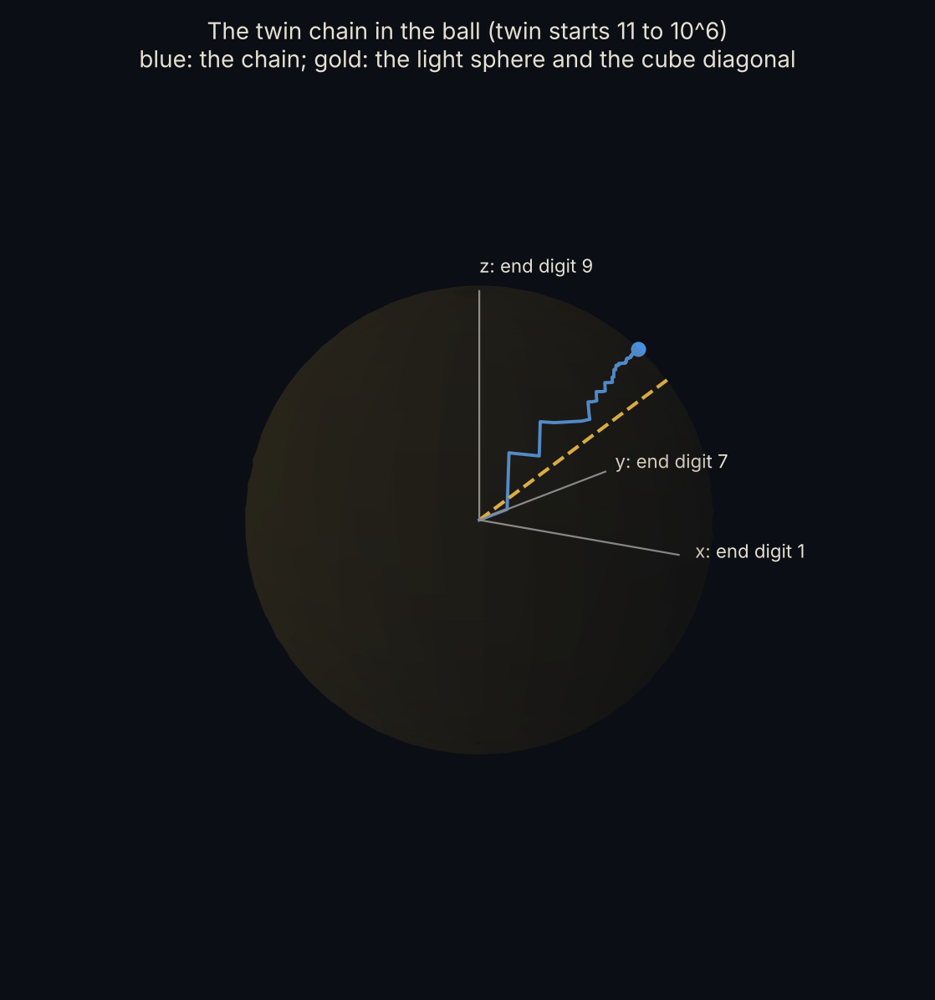
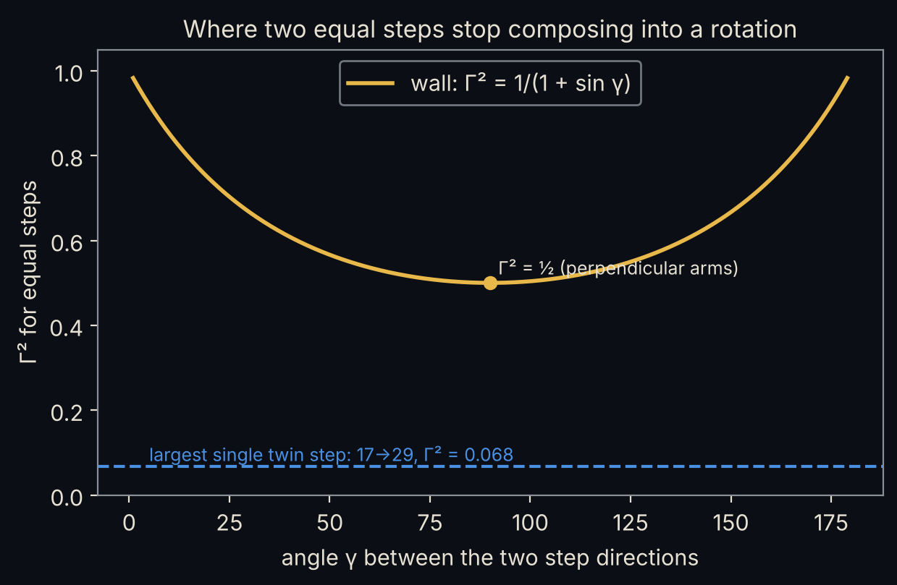
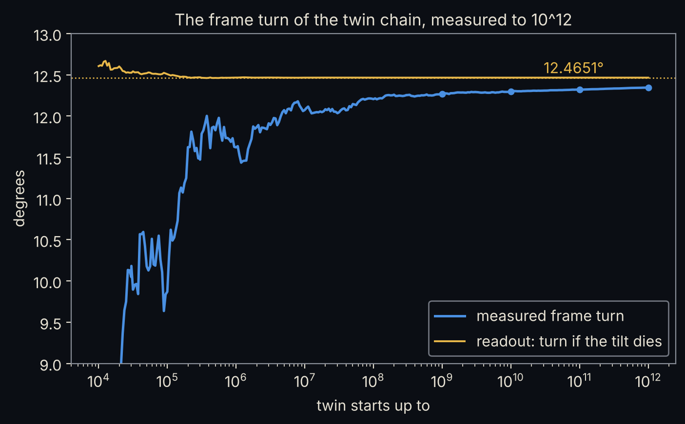
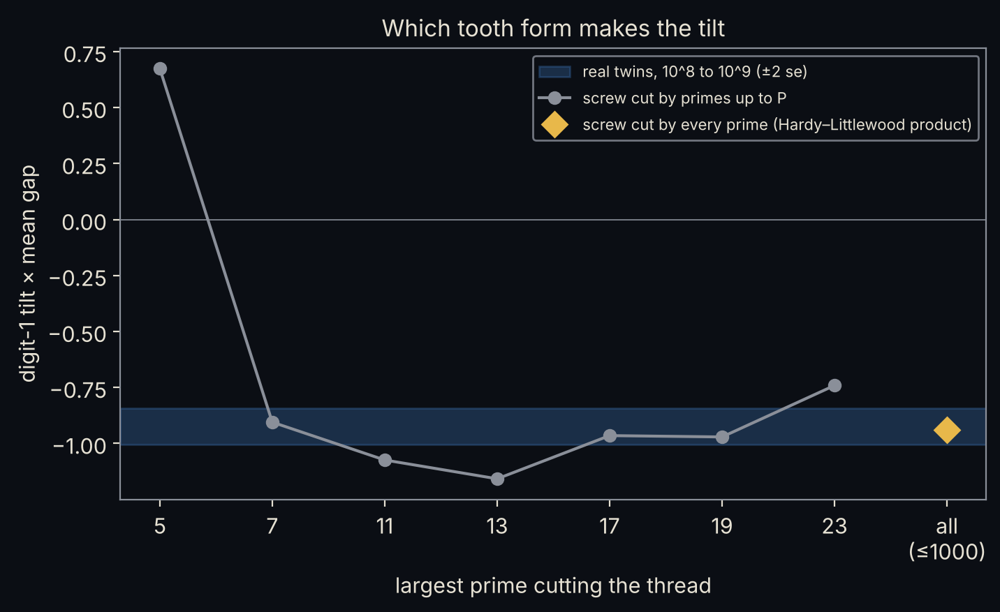
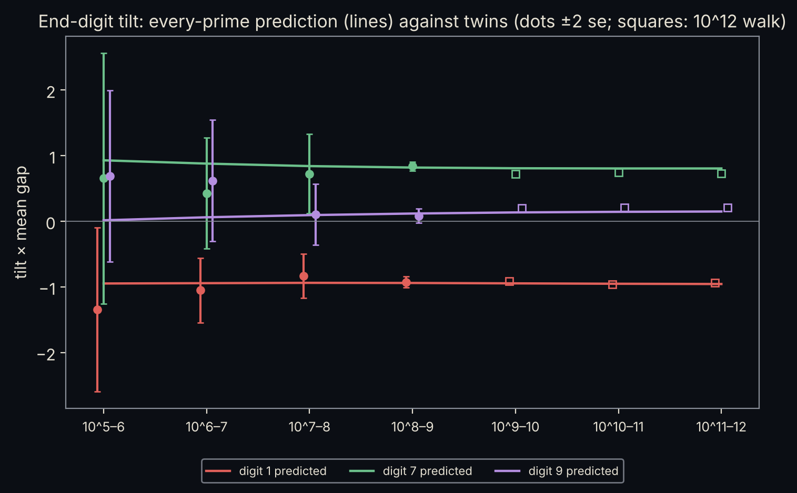
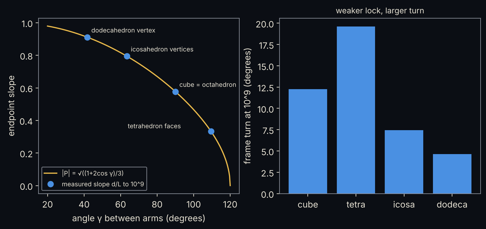
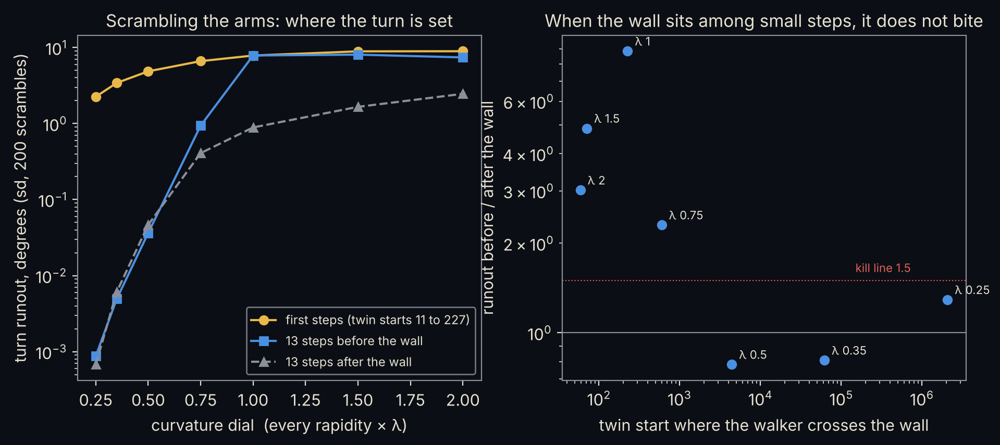
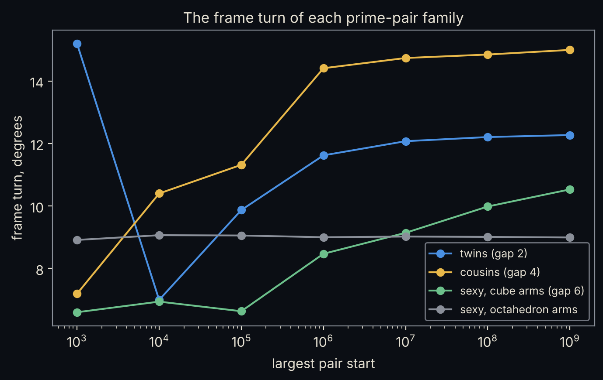
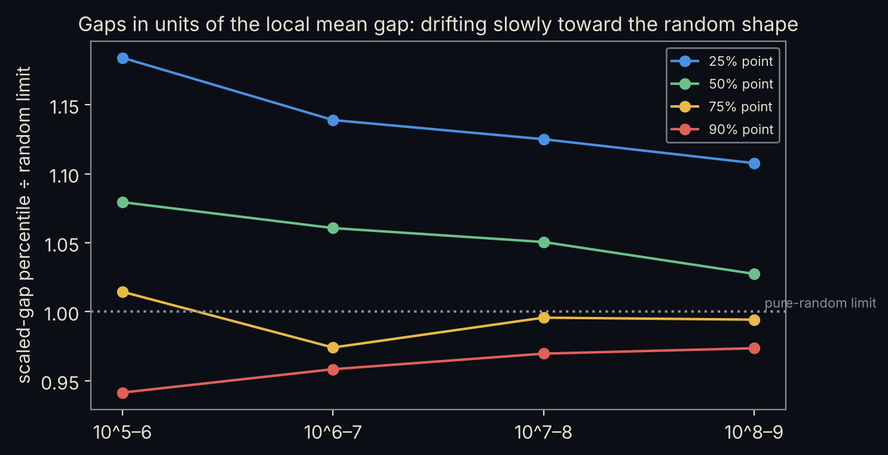
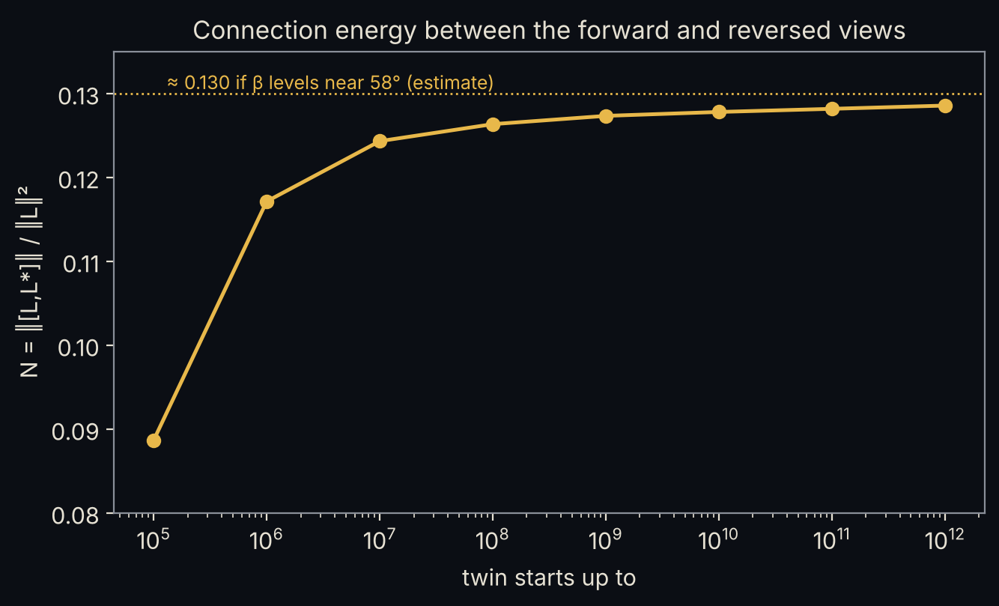

<title>The Twin-Prime Chain in the Peel Ball</title>
<meta name="claude:viewport-fit-sides" content="cover">
<link rel="stylesheet" href="https://fonts.googleapis.com/css2?family=Source+Serif+4:ital,opsz,wght@0,8..60,400;0,8..60,600;1,8..60,400&family=IBM+Plex+Sans:wght@400;500;600&family=IBM+Plex+Mono:wght@400&display=swap">
<style>
/* Layout: one reading column on the dark ground of the ball; gold is light, blue is the electron (his colour code). */
:root{
  --ground:#0b0e14; --panel:#121722; --ink:#e6e1d3; --muted:#a8a596; --rule:#2a3140;
  --gold:#e8b84a; --blue:#5b9ae8; --kill:#e0605a; --pass:#6cc08b;
  --serif:"Source Serif 4",Georgia,"Times New Roman",serif;
  --sans:"IBM Plex Sans",system-ui,-apple-system,"Segoe UI",sans-serif;
  --mono:"IBM Plex Mono",ui-monospace,Menlo,Consolas,monospace;
  color-scheme:dark;
}
html{background:var(--ground)}
body{background:var(--ground);color:var(--ink);font-family:var(--serif);font-size:18px;line-height:1.62;
  padding-left:max(16px,env(safe-area-inset-left,0px));padding-right:max(16px,env(safe-area-inset-right,0px));padding-block:0 4rem}
main{max-width:46rem;margin:0 auto}
header{padding-block:3.5rem 2rem;border-bottom:1px solid var(--rule)}
h1{font-family:var(--serif);font-weight:600;font-size:clamp(1.9rem,5vw,2.8rem);line-height:1.15;margin:0;text-wrap:balance}
.sub{font-family:var(--sans);color:var(--gold);font-size:1.05rem;margin:.6rem 0 0;letter-spacing:.01em}
.by{font-family:var(--sans);color:var(--muted);font-size:.95rem;margin-top:1.2rem}
.ai{font-family:var(--sans);font-size:.85rem;color:var(--muted);font-style:italic;margin-top:1.4rem}
h2{font-family:var(--sans);font-weight:600;font-size:1.35rem;margin:3rem 0 .8rem;color:var(--ink);text-wrap:balance}
h2 .n{color:var(--gold);margin-right:.5rem;font-variant-numeric:tabular-nums}
h3{font-family:var(--sans);font-weight:600;font-size:1.05rem;margin:2rem 0 .5rem;color:var(--blue)}
p{margin:.8rem 0}
.g{font-family:var(--sans);font-size:.68rem;letter-spacing:.08em;text-transform:uppercase;padding:.08rem .4rem;border-radius:3px;border:1px solid var(--rule);color:var(--muted);vertical-align:.15em;white-space:nowrap}
.g.proved{color:var(--gold);border-color:var(--gold)}
.g.measured{color:var(--blue);border-color:var(--blue)}
.g.untested{color:var(--kill);border-color:var(--kill)}
.eq{font-family:var(--serif);font-size:1.12rem;text-align:center;margin:1.1rem 0;color:var(--ink);overflow-x:auto}
.stmt{border-left:2px solid var(--gold);padding:.2rem 0 .2rem 1rem;margin:1.2rem 0}
.stmt b:first-child{font-family:var(--sans)}
.tbl{overflow-x:auto;margin:1rem 0}
table{border-collapse:collapse;font-family:var(--sans);font-size:.86rem;font-variant-numeric:tabular-nums;min-width:100%}
th,td{padding:.38rem .6rem;border-bottom:1px solid var(--rule);text-align:left;white-space:nowrap}
th{color:var(--muted);font-weight:500}
td.pass{color:var(--pass)} td.kill{color:var(--kill)}
figure{margin:1.6rem 0}
figure img{display:block;width:100%;height:auto;border-radius:4px}
figcaption{font-family:var(--sans);font-size:.85rem;color:var(--muted);margin-top:.5rem}
ul,ol{padding-left:1.3rem} li{margin:.3rem 0}
.reading{background:var(--panel);padding:1rem 1.2rem;border-radius:6px;margin:1rem 0}
.reading p:first-child{margin-top:0}
code{font-family:var(--mono);font-size:.85em;color:var(--muted);word-break:break-word}
nav.toc{font-family:var(--sans);font-size:.92rem;margin:2rem 0;columns:2;column-gap:2rem}
nav.toc a{color:var(--ink);text-decoration:none;display:block;padding:.12rem 0}
nav.toc a:hover,nav.toc a:focus-visible{color:var(--gold)}
@media (max-width:560px){nav.toc{columns:1} body{font-size:17px}}
a{color:var(--gold)}
:focus-visible{outline:2px solid var(--gold);outline-offset:2px}
</style>

<main>
<header>
<h1>The Twin-Prime Chain in the Peel Ball</h1>
<p class="sub">Endpoint law, frame turn, the thread cut by every prime, and where the turn is set</p>
<p class="by">Jeromie Beasley · 24 November 2026 · version 2</p>
<p class="ai">Prepared with AI assistance (Claude). Every number here comes from a script recorded on GitHub.</p>
</header>

<h2>Abstract</h2>
<p>The twin-prime starts 11, 17, 29, 41, … are walked through the peel ball as a product of Lorentz boosts.</p>
<ul>
<li><b>Step size.</b> Each step has rapidity r = ln(a′/a), so its peel reflection is Γ = (z − 1)/(z + 1) = tanh(r/2), with z = a′/a.</li>
<li><b>Step direction.</b> Each step runs along one of three perpendicular arms, set by the end digit 1, 7 or 9 of the next twin start. Those digits are exactly the classes 11, 17 and 29 mod 30.</li>
</ul>
<p>Eleven results follow.</p>
<ol>
<li><b>The exact step.</b> The step and its turn are exact at any arm angle. The wall, where two equal steps stop composing into a rotation, sits at Γ² = 1/(1 + sin γ).</li>
<li><b>The endpoint law.</b> The distance grows as d = |P|·L + c, where L = ln(a/11) is the path and P is the gap-weighted mean arm. This is proved under two weak conditions. For cube arms |P| = 1/√3, and c = 0.1086 is measured to 10¹².</li>
<li><b>The turn is a holonomy.</b> The frame turn is the area the walk sweeps in rapidity space. It converges under named conditions. A proof without those conditions would itself settle an open twin-prime statement.</li>
<li><b>The tilt is derived.</b> The small end-digit tilt that steers the heading comes from the Hardy–Littlewood factors: the thread of the twin chain cut by every prime at once. It matches the twin primes in every decade from 10⁵ to 10¹².</li>
<li><b>The turn limit.</b> The turn is 12.3442° at 10¹². Its readout once the tilt dies is 12.46508°, stable from 10¹⁰ on.</li>
<li><b>Connection energy.</b> The forward and reversed readings of the chain keep a connection energy of about 0.13 between them.</li>
<li><b>Where the turn is set.</b> A curvature dial and its opposite setup both show the turn is set by the walk's first steps, not at the wall crossing. The wall reading is killed twice.</li>
<li><b>Other prime pairs.</b> Under one arm rule (the residue mod 5), cousin and sexy primes share the slope 1/√3 and the early wall crossing. The turn is not a Hardy–Littlewood number: twins and cousins share the constant but differ by 2.7°.</li>
<li><b>The dodecahedral honeycomb.</b> The twin arms are the edges of the {5,3,4} honeycomb, where cosh ℓ = φ and Γ² = √5 − 2. Two perpendicular edges turn the frame by exactly arctan ½. Walked on the honeycomb, the order of the twin end digits alone shows a prime signal (z = −51), and about 16% of it is memory beyond consecutive pairs.</li>
<li><b>Two predictions of version 1 settled.</b> The 7/9 split and the cousin tilt both pass.</li>
<li><b>The 186 bound.</b> The main terms of OpenAI's certificate are confirmed independently. The gap 182 is out of reach with their inputs.</li>
</ol>

<figure><figcaption>The twin chain to 10⁶ in the ball. Blue is the walker. Gold is the light sphere and the cube diagonal.</figcaption></figure>

<p style="font-family:var(--sans);font-size:.9rem;color:var(--muted)">How each claim is graded:</p>
<ul style="font-family:var(--sans);font-size:.9rem;color:var(--muted)">
<li><span class="g proved">proved</span> exact algebra, checked numerically.</li>
<li><span class="g">derived</span> follows from stated inputs, with the approximation named.</li>
<li><span class="g">conditional</span> proved under a named hypothesis.</li>
<li><span class="g measured">measured</span> computed on the twin primes.</li>
<li><span class="g">cited</span> taken from published work.</li>
<li><span class="g untested">untested</span> a prediction, with its kill condition written first.</li>
</ul>

<nav class="toc" aria-label="Sections">
<a href="#s1">1 The chain</a><a href="#s2">2 The exact step and the wall</a><a href="#s3">3 Distance and heading on their own</a><a href="#s4">4 The endpoint law</a><a href="#s5">5 The turn is a holonomy</a><a href="#s6">6 Measured to 10¹²</a><a href="#s7">7 The thread cut by every prime</a><a href="#s8">8 Other chains, other shapes</a><a href="#s9">9 Where the turn is set</a><a href="#s10">10 The other prime pairs</a><a href="#s11">11 The dodecahedral honeycomb</a><a href="#s12">12 The 186 bound</a><a href="#s13">13 The ruler</a><a href="#s14">14 Two readings, one light sphere</a><a href="#s15">15 Light and the electron</a><a href="#s16">16 Predictions</a><a href="#s17">17 Position</a><a href="#s18">Test register</a><a href="#s19">Scripts and sources</a><a href="#s20">How the primes were found</a>
</nav>

<h2 id="s1"><span class="n">1</span>The chain</h2>
<p>Write the twin-prime starts above 5 as a₀ = 11 &lt; a₁ &lt; a₂ &lt; … Step n has:</p>
<ul>
<li><b>size</b> rₙ = ln(aₙ/aₙ₋₁), which is the peel reflection Γₙ = tanh(rₙ/2);</li>
<li><b>direction</b> the arm set by the end digit of aₙ: 1 → x, 7 → y, 9 → z.</li>
</ul>
<p><span class="g proved">proved</span> Every twin start above 5 lies in one of the classes 11, 17, 29 mod 30. The reason:</p>
<ul>
<li>a must be odd;</li>
<li>a ≡ 2 mod 3, or else 3 divides a + 2;</li>
<li>a mod 5 must avoid 0 and 3.</li>
</ul>
<p>The end digits 1, 7, 9 match those three classes one for one.</p>
<p>The chain is the product Lₙ = B₁B₂⋯Bₙ, split as Boost(d·n)·R. That split gives four readings:</p>
<ul>
<li>the distance d;</li>
<li>the heading n (the lab view);</li>
<li>the frame R;</li>
<li>the body heading u = Rᵀn.</li>
</ul>
<p>The path is L = Σr = ln(aₙ/11).</p>

<h2 id="s2"><span class="n">2</span>The exact step and the wall</h2>
<div class="stmt"><p><b>Two boosts.</b> <span class="g proved">proved</span> Compose two boosts with peel reflections Γ₁ and Γ₂ whose directions are at angle γ. The result is a boost times a turn ε about the axis normal to both directions:</p>
<p class="eq">tan(ε/2) = Γ₁Γ₂ sin γ / (1 + Γ₁Γ₂ cos γ)</p>
<p class="eq">cosh d′ = cosh ζ₁ cosh ζ₂ + sinh ζ₁ sinh ζ₂ cos γ</p></div>
<p>How it is derived:</p>
<ol>
<li>The rotation part of any M = HU is U = (M + M<sup>†−1</sup>)/tr H. This uses H + H⁻¹ = (tr H)·I.</li>
<li>For two boosts, M + M<sup>†−1</sup> = 2[c₁c₂ + s₁s₂ cos γ + i s₁s₂ (n × w)·σ], with cᵢ = cosh(ζᵢ/2) and sᵢ = sinh(ζᵢ/2).</li>
<li>Read off the two parts and divide by c₁c₂.</li>
</ol>
<p>How it was checked: at 160 digits the worst error is 10⁻¹⁴⁶, and an independent double-precision check agrees to 7×10⁻¹⁴.</p>
<p>For perpendicular equal steps the formula reduces to the Thomas turn of <i>Two Trees in One Ball</i>, tan(ε/2) = Γ².</p>

<div class="stmt"><p><b>The wall at any angle.</b> <span class="g proved">proved</span> For two boosts at angle γ:</p>
<p class="eq">tr[A,B] = 2 − 4 sinh²(r₁/2) sinh²(r₂/2) sin²γ</p>
<p>For equal steps the trace reaches −2, the wall, at</p>
<p class="eq">Γ² = 1/(1 + sin γ)</p></div>
<p>How it is derived:</p>
<ol>
<li>Start from Fricke's identity: tr[A,B] = tr²A + tr²B + tr²AB − trA·trB·trAB − 2.</li>
<li>Substitute the boost traces. The cross terms cancel.</li>
<li>Use c² = 1 + s², which leaves 2 − 4s₁²s₂² sin²γ.</li>
</ol>
<p>Checked to 1.4×10⁻¹⁴.</p>
<figure><figcaption>The wall at any arm angle. The largest single twin step (17 → 29, Γ² = 0.068) is far below it.</figcaption></figure>
<p><span class="g measured">measured</span> Where the twin chain meets the wall:</p>
<ul>
<li>No single step reaches it.</li>
<li>The chain as a whole crosses the wall sphere ρ² = ½ between twin starts 197 and 227. By then 80% of its final turn already exists.</li>
<li>Read as three books (each arm's steps summed into one boost), the pairs reach the wall at twin starts 1151 (x,z), 2027 (y,z) and 4481 (x,y).</li>
</ul>

<h2 id="s3"><span class="n">3</span>Distance and heading run on their own</h2>
<p><span class="g proved">proved</span> Every boost is symmetric, so Y = Lᵀe₀ = (cosh d, sinh d·u) obeys Yₙ = Bₙ·Yₙ₋₁. Distance and body heading make a walk of their own, and the frame is driven by it. It works like a two-shaft gearbox: the inner shaft turns by itself, and the outer sleeve rides on it with the ratio tanh(d/2).</p>
<p><span class="g proved">proved</span> In velocity form v = tanh(d)·u, a step is relativistic velocity addition, and every component stays non-negative. The walk never leaves the positive octant.</p>

<h2 id="s4"><span class="n">4</span>The endpoint law</h2>
<div class="stmt"><p><b>Theorem A.</b> <span class="g">conditional</span> Assume two things:</p>
<ul>
<li>the steps shrink to zero;</li>
<li>the gap-weighted end-digit shares settle over windows of fixed path length.</li>
</ul>
<p>Then the heading converges to P/|P|, the distance grows without bound, and d/L → |P|. The condition Σr² &lt; ∞ is not needed.</p></div>
<p>How it is proved:</p>
<ol>
<li>The walk is a stochastic-approximation scheme on a compact set, so Benaïm's limit-set theorem applies.</li>
<li>Take the Lyapunov function V = P·v. It increases everywhere except at ±P̂.</li>
<li>The point −P̂ is outside the positive octant, so it cannot be the limit.</li>
</ol>
<p><span class="g">derived</span> <b>Why 1/√3.</b> Each step runs along a cube edge, and only its shadow on the body diagonal carries the walker outward. The rest goes into turning.</p>
<ul>
<li>For three arms at mutual angle γ: |P| = √((1 + 2 cos γ)/3).</li>
<li>The slope does not come from curvature. Flat Euclidean space gives 0.57840 too.</li>
</ul>
<p><span class="g measured">measured</span> <b>Counts alone do not fix the endpoint.</b> I kept the real gaps and gave every triple of steps one of each end digit, so the counts per digit are equal. When the largest gap in each triple goes to digit 1, d/L becomes 0.656, against 0.583 for the real chain. The law needs the gaps and the end digits to spread out together.</p>
<p><span class="g measured">measured</span> <b>The offset c</b> in d = L/√3 + c:</p>
<ul>
<li>c = 0.108528 at 10⁸, 0.108568 at 10⁹, 0.108618 at 10¹².</li>
<li>It splits exactly into four parts: first step +0.184, curvature gain +0.591, arm noise −0.409, heading lag −0.257.</li>
<li>It is set by about the first 1,200 twin starts. Running the real chain to 10⁴ and then the averaged theory gives 0.1091.</li>
<li>Other labellings give other values: mod 9 gives 0.067, mod 7 gives 0.347, cousins give 0.184.</li>
</ul>
<p>So c is a fingerprint of the early chain. Its limit is about 0.10866 <span class="g">derived</span>.</p>

<h2 id="s5"><span class="n">5</span>The turn is a holonomy</h2>
<p><span class="g">derived</span> <b>Each step's turn is an area.</b> Take the thin triangle with corners at the origin, the walker, and the walker one step later. Its area is (cosh d − 1)·r sin θ / sinh d = r sin θ tanh(d/2), which is the first-order Wigner turn. So the total turn is the holonomy of the loop that goes out along the chain and back along the straight line. The space bends; the primes choose the loop.</p>
<p><span class="g measured">measured</span> <b>Changing the curvature:</b></p>
<ul>
<li>Every flat reading gives zero turn.</li>
<li>At √curvature = 2, 1 and 1/16 the turn is 30.93°, 12.20° and 0.40°.</li>
<li>As the curvature shrinks, the turn tends to curvature × flat area (ratio 0.966 at 1/16).</li>
<li>Hyperbolic area cannot grow without limit, so the ball's turn has a limit.</li>
</ul>
<div class="stmt"><p><b>Theorem B.</b> <span class="g">conditional</span> The frame converges under three conditions:</p>
<ul>
<li>Σr² &lt; ∞;</li>
<li>the local weights p(L) change by only a finite total amount;</li>
<li>Σ r|N| &lt; ∞, where N is the noise tail around the <i>local</i> mean.</li>
</ul></div>
<p>The proof uses a corrector lemma (put z = B·N into the gauge and apply Hadamard's lemma twice). Around the fixed mean (⅓, ⅓, ⅓) the tail falls only like 1/L, which is borderline. Around the local mean the remainder is 3×10⁻⁵, the size of a random walk.</p>
<p><span class="g proved">proved</span> <b>What a proof without conditions would imply.</b></p>
<ul>
<li>d ≤ L, so if d grows without bound by itself, there are infinitely many twin primes.</li>
<li>If the frame converges on an infinite chain (with d bounded away from 0 and the heading off the axes), then rₙ → 0. That would put a twin start in every interval (x, (1+ε)x], which is open.</li>
</ul>
<p>So the dynamics alone cannot finish the proof. An arithmetic input is needed.</p>
<p><span class="g">conditional</span> If Hardy–Littlewood holds with error O(x/ln³⁺ᵉ x), then Σr² &lt; ∞. Measured: Σr² = 1.2685628 at 10¹².</p>

<h2 id="s6"><span class="n">6</span>Measured to 10¹²</h2>
<p>The walker is a C program that works in SL(2,ℂ) with a segmented sieve. It reproduces every earlier run, and its twin counts match the published values at 10⁹ through 10¹².</p>
<div class="tbl"><table>
<thead><tr><th>up to</th><th>10⁸</th><th>10⁹</th><th>10¹⁰</th><th>10¹¹</th><th>10¹²</th></tr></thead>
<tbody>
<tr><td>frame turn</td><td>12.2048°</td><td>12.2695°</td><td>12.2969°</td><td>12.3197°</td><td>12.3442°</td></tr>
<tr><td>turn once the tilt dies</td><td>12.46514°</td><td></td><td>12.46507°</td><td>12.46508°</td><td>12.46508°</td></tr>
<tr><td>c</td><td>0.108528</td><td>0.108568</td><td>0.108590</td><td>0.108607</td><td>0.108618</td></tr>
</tbody></table></div>
<figure><figcaption>The frame turn (blue) climbs toward the readout of the turn once the tilt dies (gold).</figcaption></figure>
<p><span class="g measured">measured</span> Why the readout works:</p>
<ul>
<li>The heading sits on the tilted local mean, not on the cube diagonal. It is 0.47° off at 10⁹, while the mean is 0.42° off, and the two offsets point the same way (cos 0.999).</li>
<li>As the tilt dies, the frame has to make the minimal rotation that carries the diagonal onto the heading. The readout is the turn after that rotation.</li>
<li>On chains with the real gaps and redrawn arms, a balanced tail lands on the readout to within 0.0006°. A tilt that never dies stays 0.67° away.</li>
</ul>
<p>Free curve fits spread from 12.33° to 12.53°, so no limit is claimed from fitting.</p>

<h2 id="s7"><span class="n">7</span>The thread cut by every prime: the tilt</h2>
<h3>The chain as a cut thread</h3>
<p>Plot the twin starts with the angle set by a mod 30 and the advance set by ln a. They sit on a three-start thread:</p>
<ul>
<li>the starts are at 11, 17 and 29, spaced 6, 12, 12 apart;</li>
<li>the pitch in path length is 30/a, so it fines out as a grows;</li>
<li>the crests are sparse.</li>
</ul>
<p><span class="g measured">measured</span> The thread has a hand. The arms step forward (1 → 7 → 9) at 0.355, backward at 0.333, and repeat at 0.312. That hand accounts, to within 10% and with the right sign, for the 6.54° of the turn that runs along the diagonal.</p>
<h3>The tilt</h3>
<p>For end digit j, the tilt is its share of the gap length minus its share of the count. Scaled by the mean gap G, the twin starts in (10⁸, 10⁹] give −0.924 ± 0.041, +0.839 ± 0.034 and +0.085 ± 0.054 for digits 1, 7 and 9.</p>
<h3>Cutting the thread one prime at a time</h3>
<p><span class="g proved">proved for the model</span> In the sieve model, integers coprime to the primes up to P are prime independently with the matching density. Twin slots share no integers, so the tilt can be computed exactly, with no random runs. The digit-1 tilt × G at 10⁸–10⁹:</p>
<div class="tbl"><table>
<thead><tr><th>largest prime</th><th>5</th><th>7</th><th>11</th><th>13</th><th>17</th><th>19</th><th>23</th></tr></thead>
<tbody><tr><td>digit 1</td><td>+0.675</td><td>−0.905</td><td>−1.074</td><td>−1.158</td><td>−0.965</td><td>−0.971</td><td>−0.741</td></tr></tbody></table></div>
<ul>
<li>The mod-30 screw on its own gives the wrong sign.</li>
<li>Cutting the thread by 7 flips it to the real sign.</li>
<li>After that, every added prime swings the value, so no finite cut is the answer.</li>
</ul>
<figure><figcaption>Cut prime by prime, the thread swings. Cut by every prime at once (gold), it lands on the twins (blue band).</figcaption></figure>
<h3>Cutting by every prime at once</h3>
<p><span class="g">derived</span> Given a twin start x in class j, the chance that x − h is also a twin start carries two kinds of factor:</p>
<ul>
<li>the mod-30 rule;</li>
<li>for each prime p ≥ 7, a tooth factor
<p class="eq">f<sub>p</sub>(h) = p(p − ν<sub>p</sub>(h)) / (p − 2)²</p>
where ν<sub>p</sub>(h) counts the distinct residues among {0, −2, h, h−2} mod p.</li>
</ul>
<p>Why this factor is right:</p>
<ul>
<li>Given x is a twin start, x is uniform over the p − 2 residues mod p that avoid {0, −2}.</li>
<li>For x − h to be a twin start, x must also avoid {h, h − 2}. That leaves p − ν<sub>p</sub> of those residues, so the chance is (p − ν<sub>p</sub>)/(p − 2).</li>
<li>Divide by the unconditional chance (p − 2)/p.</li>
</ul>
<p>These are the Hardy–Littlewood local factors for the pattern {0, 2, h, h+2}. A mean-field first-arrival step turns them into the gap back to the previous twin start.</p>
<p>Two checks:</p>
<ul>
<li>With the primes up to 19 only, it reproduces the exact 19-prime screw to within 0.039.</li>
<li>The result stops moving by p ≤ 1000. The same three digits come out at 10⁴ and 10⁵.</li>
</ul>
<div class="tbl"><table>
<thead><tr><th>decade</th><th>predicted (1, 7, 9)</th><th>twin primes (1, 7, 9)</th><th>within 2 se</th></tr></thead>
<tbody>
<tr><td>10⁵–10⁶</td><td>−0.947, +0.930, +0.016</td><td>−1.344, +0.654, +0.691</td><td class="pass">yes</td></tr>
<tr><td>10⁶–10⁷</td><td>−0.942, +0.880, +0.062</td><td>−1.050, +0.429, +0.621</td><td class="pass">yes</td></tr>
<tr><td>10⁷–10⁸</td><td>−0.937, +0.842, +0.095</td><td>−0.830, +0.725, +0.105</td><td class="pass">yes</td></tr>
<tr><td>10⁸–10⁹</td><td>−0.939, +0.820, +0.119</td><td>−0.924, +0.839, +0.085</td><td class="pass">yes</td></tr>
<tr><td>10⁹–10¹⁰</td><td>−0.945, +0.809, +0.136</td><td>walk: −0.915, +0.718, +0.198</td><td>digit 1 to 0.03</td></tr>
<tr><td>10¹⁰–10¹¹</td><td>−0.951, +0.806, +0.145</td><td>walk: −0.957, +0.744, +0.213</td><td>digit 1 to 0.01</td></tr>
<tr><td>10¹¹–10¹²</td><td>−0.955, +0.806, +0.150</td><td>walk: −0.939, +0.730, +0.209</td><td>digit 1 to 0.02</td></tr>
</tbody></table></div>
<p>The predicted mean gaps beyond 10⁹ are 378, 459 and 548. The walk gives 375, 457 and 547.</p>
<p>The split between digits 7 and 9 runs about 0.07 off, the same way, in all three decades beyond 10⁹. Whether that comes from the mean-field step or from the walk's step weighting is <span class="g untested">untested</span>.</p>
<figure><figcaption>Lines are the every-prime prediction. Dots are the twin primes (±2 se). Squares are the 10¹² walk.</figcaption></figure>
<div class="stmt"><p><b>The tilt.</b> <span class="g">derived</span>, with measured agreement. The end-digit tilt is about κ/G, with κ ≈ (−0.95, +0.81, +0.14) holding steady from 10⁵ to 10¹². The sign is set the moment 7 cuts the thread. The tilt therefore dies like 1/G ∼ 2C₂/ln²x. That was the condition the turn limit needed, and it now rests on Hardy–Littlewood.</p></div>

<h2 id="s8"><span class="n">8</span>Other chains, other shapes</h2>
<p><span class="g measured">measured</span> d/L matches |P| + c/L to within 0.02% for twins labelled mod 9 and mod 7, for cousins, for all primes on four perpendicular arms, and for random twin-like chains.</p>
<p>Where the law breaks:</p>
<ul>
<li>Arms held in blocks: 1.7% off for blocks of length 1, 8.4% for blocks of 4. Even blocks of 0.25 keep the frame turning.</li>
<li>Fixed steps of ln 5: d/L becomes 0.764.</li>
</ul>
<p>When the arms cancel (tetrahedral arms, |P| = 0), the distance grows like 0.326 ln L. That law was written before the 10⁹ run.</p>
<p>All primes and sexy primes carry a steady 1/L tilt, because each end digit forbids one class of incoming gap. Their frames keep turning. Twins and cousins are the clean cases.</p>
<p><span class="g measured">measured</span> <b>The measuring shapes.</b> Both laws hold on every Platonic arm set: the slope √((1 + 2 cos γ)/3) and the late turn per step √(1 − |P|²).</p>
<div class="tbl"><table>
<thead><tr><th>arms</th><th>γ</th><th>|P|</th><th>slope</th><th>c</th><th>turn</th></tr></thead>
<tbody>
<tr><td>cube = octahedron</td><td>90°</td><td>0.57735</td><td>0.57729</td><td>0.1086</td><td>12.27°</td></tr>
<tr><td>tetrahedron faces</td><td>109.47°</td><td>0.33333</td><td>0.33271</td><td>0.1567</td><td>19.62°</td></tr>
<tr><td>icosahedron vertices</td><td>63.43°</td><td>0.79465</td><td>0.79465</td><td>0.0603</td><td>7.45°</td></tr>
<tr><td>dodecahedron vertex</td><td>41.81°</td><td>0.91117</td><td>0.91117</td><td>0.0281</td><td>4.62°</td></tr>
</tbody></table></div>
<figure><figcaption>The weaker the lock on P, the larger the turn.</figcaption></figure>
<p>The three-fold reading:</p>
<ul>
<li>The arms walk on the 120° turn group about the diagonal.</li>
<li>Mod 9, each step is the gap mod 9, which is always 0, 3 or 6.</li>
<li>The turn splits into 6.54° along the diagonal and 10.38° across it.</li>
</ul>

<h2 id="s9"><span class="n">9</span>Where the turn is set: the first cut</h2>
<p>About 80% of the frame turn exists when the walker crosses the wall sphere ρ² = ½ (ρ = tanh(d/2)), between twin starts 197 and 227. The offset c is set by the first 1,200 starts. That raises the question of whether the wall is the seat the thread cuts into, the place it bites. Two tests answer it.</p>
<h3>The scramble test <span class="g measured">measured</span></h3>
<p>Scramble the end-digit arms inside one window of 13 steps, keeping the counts. Do it 200 times and measure the spread (runout) of the final turn at 10⁸.</p>
<div class="tbl"><table><thead><tr><th>window</th><th>twin starts</th><th>turn runout</th><th>runout of c</th></tr></thead><tbody>
<tr><td>before the wall</td><td>11–227</td><td>8.38°</td><td>0.0787</td></tr>
<tr><td>just after the wall</td><td>227–641</td><td>1.08°</td><td>0.0119</td></tr>
<tr><td>near 10⁵</td><td>99,989–101,531</td><td>0.0030°</td><td>0.00009</td></tr>
</tbody></table></div>
<p>After the first stretch the chain is only being polished. This test cannot separate two causes, though, because the early steps are also the big steps.</p>
<h3>The curvature dial <span class="g measured">measured</span> <span class="g untested">wall reading killed</span></h3>
<p>Scale every rapidity by a dial λ, so r → λr. This is the same chain in a ball whose curvature is λ² times stronger. The big steps stay at the start, but the wall crossing moves: far out for small λ, early for large λ.</p>
<p><i>Kill condition, written before the run:</i> the wall is not the bite if, at every λ that puts the crossing beyond 10⁴, the before/after runout ratio is below 1.5.</p>
<div class="tbl"><table><thead><tr><th>λ</th><th>wall crossed at</th><th>runout before</th><th>runout after</th><th>ratio</th><th>first steps 11–227</th></tr></thead><tbody>
<tr><td>0.25</td><td>2,069,381</td><td>0.00087°</td><td>0.00068°</td><td class="kill">1.29</td><td>2.26°</td></tr>
<tr><td>0.35</td><td>61,979</td><td>0.0049°</td><td>0.0061°</td><td class="kill">0.81</td><td>3.43°</td></tr>
<tr><td>0.5</td><td>4,421</td><td>0.036°</td><td>0.047°</td><td class="kill">0.78</td><td>4.87°</td></tr>
<tr><td>0.75</td><td>599</td><td>0.94°</td><td>0.41°</td><td>2.30</td><td>6.63°</td></tr>
<tr><td>1</td><td>227</td><td>7.86°</td><td>0.89°</td><td>8.84</td><td>7.85°</td></tr>
<tr><td>1.5</td><td>71</td><td>8.07°</td><td>1.66°</td><td>4.86</td><td>8.92°</td></tr>
<tr><td>2</td><td>59</td><td>7.42°</td><td>2.46°</td><td>3.01</td><td>8.95°</td></tr>
</tbody></table></div>
<p>The kill fires. When the wall sits among small steps, scrambling just before it and just after it does the same small thing. Meanwhile the first stretch carries degrees of runout at every λ. (At λ = 2 the turn was read through the singular-value polar split, because d is large there. At λ = 1 the two readings agree to every printed digit.)</p>
<h3>The opposite setup <span class="g untested">wall reading killed again</span></h3>
<p>Run it the other way round: keep λ = 1 and start the walk late, so that no step is big.</p>
<div class="tbl"><table><thead><tr><th>walk starts at</th><th>wall crossed at</th><th>first 13 steps</th><th>before wall</th><th>after wall</th><th>ratio</th></tr></thead><tbody>
<tr><td>10,007</td><td>211,499</td><td>0.497°</td><td>0.0053°</td><td>0.0101°</td><td class="kill">0.52</td></tr>
<tr><td>100,151</td><td>2,119,259</td><td>0.111°</td><td>0.00080°</td><td>0.00062°</td><td class="kill">1.30</td></tr>
</tbody></table></div>
<p><b>What survives.</b> Wherever the walk begins, its own first steps set the runout, and that runout is about 100 times anything near the wall. The thread is cut by its first steps: the largest ones, taken before the frame has a direction to hold. The wall sphere is a distance the walker passes, not where the turn is fixed. In lathe terms, the first cut sets the part. That is also why the turn limit 12.4651° belongs to the chain that <i>starts at 11</i>: start the twins at 17 and the turn at 10⁹ is 27.12° (Section 10).</p>
<figure><figcaption>The first cut. Left: runout from arm scrambles against the curvature dial. Right: the before/after-wall ratio against where the wall sits.</figcaption></figure>

<h2 id="s10"><span class="n">10</span>The other prime pairs</h2>
<p><b>One arm rule for every family.</b> For a prime pair (p, p+g) with p &gt; 5, the residue mod 5 always has exactly three allowed values:</p>
<ul><li>g = 2: 1, 2, 4;</li><li>g = 4: 2, 3, 4;</li><li>g = 6: 1, 2, 3.</li></ul>
<p>Put the arm on the allowed residue in increasing order, x, y, z. For twins this <i>is</i> the end-digit rule (11 → x, 17 → y, 29 → z), so the twins' end digit is really their residue mod 5. For cousins it gives 7 → x, 13 → y, 19 → z.</p>
<p>Sexy primes have six classes mod 30, because their residue mod 3 is free. That is a fork, so both were built: <i>sexy-3</i> on the cube arms, and <i>sexy-6</i> on the six octahedron directions, with the sign set by p mod 3.</p>
<p><span class="g measured">measured</span> Every family was sieved to 10⁹. The twin run reproduces the earlier chain exactly: turn 12.2690°, d = 10.68815, c = +0.10857.</p>
<div class="tbl"><table><thead><tr><th>family</th><th>start</th><th>turn, 10⁹</th><th>slope 10⁵→10⁹</th><th>c, 10⁹</th><th>wall into</th><th>L at crossing</th></tr></thead><tbody>
<tr><td>twins (gap 2)</td><td>11</td><td>12.2690°</td><td>0.57729</td><td>+0.10857</td><td>227</td><td>3.027</td></tr>
<tr><td>cousins (gap 4)</td><td>7</td><td>14.9926°</td><td>0.57726</td><td>+0.18376</td><td>127</td><td>2.898</td></tr>
<tr><td>sexy-3 (gap 6)</td><td>7</td><td>10.5305°</td><td>0.57955</td><td>+0.1038 (rising)</td><td>151</td><td>3.071</td></tr>
<tr><td>sexy-6, octahedron</td><td>7</td><td>8.9931°</td><td>0.0037</td><td>d = 0.53, bounded</td><td>never</td><td>—</td></tr>
</tbody></table></div>
<p><b>Why the slope is the same</b> <span class="g">derived</span></p>
<ol>
<li>A step of rapidity r along arm e changes the distance by r(u·e), where u is the body heading, plus a curvature term whose total is a constant.</li>
<li>The heading settles on the mean arm P, so u·e averages to |P| and d ≈ |P|L + c. That is the endpoint law.</li>
<li>Three perpendicular arms with equal shares give P = (1,1,1)/3, so |P| = 1/√3.</li>
</ol>
<p>The class shares are equal to ±0.0002 in every family. Exact equality is a conjecture of the same kind as the twin-prime conjecture. On the octahedron arms P = 0, so there is no drift.</p>
<p><b>The turn is not a Hardy–Littlewood number</b> <span class="g measured">measured</span></p>
<ul>
<li>Twins and cousins have the same constant, 2C₂ = 1.3203, and their counts to 10⁹ are 3,424,506 and 3,424,680. Yet their turns differ by 2.72°.</li>
<li>Sexy primes have twice the constant and turn less.</li>
<li>Moving the start by one member changes everything:</li>
</ul>
<div class="tbl"><table><thead><tr><th>family</th><th>usual start</th><th>one member later</th><th>two members later</th></tr></thead><tbody>
<tr><td>twins</td><td>11: 12.27°</td><td>17: 27.12°</td><td>29: 20.25°</td></tr>
<tr><td>cousins</td><td>7: 14.99°</td><td>13: 22.94°</td><td>19: 34.21°</td></tr>
<tr><td>sexy-3</td><td>7: 10.53°</td><td>11: 9.19°</td><td>13: 7.92°</td></tr>
</tbody></table></div>
<p>The turn belongs to each family's smallest members, which is the first cut of Section 9. The slope and the wall crossing belong to the arm geometry, so they are shared.</p>
<p><b>The real arm order turns less than random arms</b> <span class="g measured">measured</span></p>
<ul>
<li>Keep each family's real gaps and draw the arms at random, 400 times. The real turns sit low: z = −1.37 for twins, −1.32 for cousins, −1.49 for sexy-3.</li>
<li>All three cycle their arms forward (x → y → z → x more than 1/9 of the time) and repeat an arm less than 1/3 of the time: 0.3124, 0.3108 and 0.2869.</li>
</ul>
<p>That is the consecutive-pair bias of the Lemke Oliver–Soundararajan kind, seen in the chain's own arms. The honeycomb reads it far more sharply.</p>
<figure><figcaption>The frame turn of each prime-pair family, by decade.</figcaption></figure>

<h2 id="s11"><span class="n">11</span>The dodecahedral honeycomb {5,3,4}</h2>
<p><b>The twin arms are the honeycomb's edges</b> <span class="g proved">proved</span></p>
<p>In {5,3,4}, right-angled dodecahedra meet four around every edge and fill the ball with no gaps. Flat space cannot do this.</p>
<ol>
<li>The vertex figure is an octahedron, so the six edges at a vertex run along ±x, ±y, ±z. Those are the twin chain's three arms.</li>
<li>Two edges of one face are adjacent octahedron vertices, 90° apart. So every face is a regular pentagon with all its angles right angles.</li>
<li>For a regular hyperbolic n-gon with interior angle α, cosh(ℓ/2) = cos(π/n) / sin(α/2). With n = 5 and α = π/2: cosh(ℓ/2) = cos 36° / sin 45° = φ/√2. So cosh ℓ = 2cosh²(ℓ/2) − 1 = φ² − 1 = <b>φ</b>, and ℓ = 1.06128.</li>
<li>In peel terms, Γ² = tanh²(ℓ/2) = (φ − 1)/(φ + 1) = φ⁻³ = <b>√5 − 2</b> = 0.23607. That is inside the wall at ½, so one honeycomb edge is a step that still composes into a turn.</li>
<li>Two perpendicular edges: the exact step gives tan(ε/2) = Γ² = √5 − 2, so tan ε = 2(√5 − 2)/(1 − (√5 − 2)²) = <b>½</b>. The frame turn is arctan ½ = 26.5651°, the angle of the 1 : 2 : √5 triangle. The polar split agrees to 12 digits.</li>
<li>Model check, written before the run: the five-edge loop x, y, −x, −y, x must close to a pure 90° rotation, since by Gauss–Bonnet the right-angled pentagon has area 3π − 5π/2 = π/2. Measured: leftover distance 7×10⁻¹⁶ and rotation 90.000000°. <b>Pass.</b></li>
</ol>
<p><b>Walking the twins on the honeycomb</b> <span class="g measured">measured</span></p>
<p>Take one edge per twin step, along the arm set by the end digit. Every step has length ℓ, so the gaps are thrown away and only the <i>order</i> of the end digits is walked. On equal steps a repeated arm goes straight and a changed arm turns, so the drift measures how often consecutive end digits repeat.</p>
<p><i>Kill condition, written before the run:</i> the real drift lies within 2 sd of 200 shuffles that keep the counts.</p>
<p>Over the first 10⁶ twin steps (to twin start 252,429,029):</p>
<ul>
<li>consecutive end digits repeat at 0.30921, against 0.33333 for independent digits (se 0.00047);</li>
<li>drift per step is 0.756495 for the real order, against 0.764406 ± 0.000154 for the shuffles: <b>z = −51</b>.</li>
</ul>
<p><b>Pass.</b> The order of the end digits alone carries a prime signal on the honeycomb. As predicted, the twins drift more slowly because they avoid repeating an end digit.</p>
<p><b>Is it only the pair bias?</b> <span class="g measured">measured</span> Two surrogates were run, each with its kill condition written before the run.</p>
<ul>
<li><b>First-order Markov chains</b> on the real 3×3 transition matrix (60 runs): drift 0.757747 ± 0.000145. Against the real 0.756495 that is z = −8.7. The consecutive-pair bias explains 84% of the gap to the shuffles.</li>
<li><b>Block Markov chains</b>, with the matrix re-estimated in each of 20 blocks of 50,000 steps (60 runs). This follows the pair bias as it weakens with size; the repeat rate rises from 0.301 to 0.312 across the blocks. Drift 0.757727 ± 0.000136, so z = −9.05.</li>
</ul>
<p>The pair bias, even as it drifts, does not account for the rest. About 16% of the honeycomb signal is order in the twin end digits beyond consecutive pairs. Whether triples or longer runs carry it is <span class="g untested">untested</span>.</p>

<p><b>The honeycomb has no turn limit.</b> After 100 and 1000 edges the real frame turn is 144.3° and 128.9°; the shuffles give 137° ± 40°. The steps never shrink, so the frame keeps moving. The chain's turn converges only because its steps shrink like 1/a, which is the same reason Brun's sum converges. The honeycomb keeps the end-digit memory and drops the shrinking.</p>

<h2 id="s12"><span class="n">12</span>The 186 bound: rebuilding OpenAI's certificate</h2>
<p>OpenAI's code was read but never run. Every check here uses this work's own code.</p>
<p><b>The claim.</b> DHL[40,2]: every admissible 40-tuple has infinitely many shifts containing two primes. Their tuple spans 186, which gives gaps of at most 186 infinitely often. It rests on three new pieces:</p>
<ul>
<li>triple dense divisibility;</li>
<li>Stadlmann's prime minorant;</li>
<li>Dickman-type fragment measures.</li>
</ul>
<p>The level of distribution is 0.5253 at order three. The certificate is a 77-coefficient trial in 40 variables, with a margin just over 1/50,000. The proof assumes three Lean axioms.</p>
<p><b>The axioms</b> <span class="g measured">measured</span></p>
<ul>
<li>|Kl₃(c; p)| ≤ 3, which is Deligne's theorem: the largest value for p ≤ 160 is 2.665, at p = 107.</li>
<li>The Kloosterman correlation bound ≤ 8p√p: the largest ratio for p ≤ 160 is 4.06. Up to p = 400 the largest ratio is 3.30 when A = B and 4.50 when A ≠ B, and there is no main term at A = B. Whether the cited result covers A = B is unconfirmed, because the note could not be fetched.</li>
<li>The numerical bounds: the cap part was rebuilt independently (below). The 97 loss components were not rebuilt.</li>
<li>The 40-tuple is admissible, with size 40 and width 186.</li>
</ul>
<p><b>The rebuild at k = 40</b> <span class="g measured">measured</span> The main sieve terms were rebuilt as two 77×77 Gram matrices using exact integer convolution. Double-precision FFT was 8% off on these forms, so it was not used.</p>
<div class="tbl"><table><thead><tr><th>quantity</th><th>this rebuild</th><th>their certificate</th></tr></thead><tbody>
<tr><td>I_H</td><td>2.3685317853×10⁻¹⁴</td><td>in [2.3685317816, 2.3685317890]×10⁻¹⁴</td></tr>
<tr><td>J</td><td>9.0248755655×10⁻¹⁴</td><td>≥ 9.0248755123×10⁻¹⁴</td></tr>
<tr><td>cap quotient</td><td>1.00020609</td><td>&gt; 1.000206</td></tr>
</tbody></table></div>
<p><b>How far down</b> <span class="g measured">measured</span></p>
<ul>
<li>The best trial in their 77-function space is one eigenvalue problem. At k = 40 it gives 1.00021374, so their trial is within 0.000008 of the best possible in that space.</li>
<li>At k = 39 (width 182) the best is 0.99439. That is below 1 before any loss is charged, short by about 0.0056, roughly 250 times their margin.</li>
<li>A recentering scan over 10 profiles and 12 hybrid constants found their setup already best everywhere. The kill fired.</li>
</ul>
<p>So 182 cannot come from their trial space, distribution inputs and geometry as they stand. As a rough size <span class="g untested">untested</span>: closing the gap through the order-three level alone would need it raised from about 0.525 to about 0.528.</p>

<h2 id="s13"><span class="n">13</span>The ruler: stretching and compressing</h2>
<p>The prime screw stretches and compresses at once:</p>
<ul>
<li><b>On a fixed ruler it stretches.</b> The mean twin gap grows like ln²a. Measured 129.6, 177.1, 236.0 and 301.6 by decade, against the Hardy–Littlewood values 128.6, 178.1, 235.9 and 301.5.</li>
<li><b>On the log path it compresses.</b> The pitch is 30/a.</li>
<li><b>Measured in the local mean gap</b> (the shrinking ruler of <i>Matter at a Scale</i>), the gap shape is close to fixed. It drifts slowly toward the random shape: the 25% point moves from 0.341 to 0.319, against a random limit of 0.288.</li>
</ul>
<p>The small-gap end keeps the memory: twin starts are never closer than 6. In the same ruler the tilt is a constant.</p>
<figure><figcaption>Twin gaps measured in the local mean gap.</figcaption></figure>

<h2 id="s14"><span class="n">14</span>Two readings, one light sphere: connection energy</h2>
<p>Read the same product of steps forward and you get L, with the lab heading n. Read it reversed and you get Lᵀ, with the body heading u. Both headings run out to points on the light sphere, the boundary of the ball. The frame is the rotation that carries one reading onto the other.</p>
<div class="stmt"><p><b>Connection energy of the chain.</b> <span class="g proved">proved</span> Write L = PU, where U turns by φ about an axis at angle β to the heading n. Then:</p>
<p class="eq">[L, L*] = P² − U*P²U,   ‖[L, L*]‖ = √2 · sinh d · 2 sin(φ/2) · sin β</p>
<p>So L is normal exactly when its turn is a pure twist about the heading. Checked to 3.5×10⁻¹³.</p></div>
<p>P² − U*P²U is one edge, D − 𝒰(D), of <i>non-normality is connection energy</i>.</p>
<p><span class="g measured">measured</span> The normalised value 𝒩 = √2 tanh d · sin(φ/2) · sin β on the 10¹² walk:</p>
<div class="tbl"><table>
<thead><tr><th>up to</th><th>10⁵</th><th>10⁶</th><th>10⁷</th><th>10⁸</th><th>10⁹</th><th>10¹⁰</th><th>10¹¹</th><th>10¹²</th></tr></thead>
<tbody><tr><td>𝒩</td><td>0.0886</td><td>0.1171</td><td>0.1243</td><td>0.1263</td><td>0.1273</td><td>0.1278</td><td>0.1281</td><td>0.1285</td></tr>
<tr><td>β</td><td>46.8°</td><td>54.9°</td><td>56.7°</td><td>57.2°</td><td>57.4°</td><td>57.5°</td><td>57.6°</td><td>57.7°</td></tr></tbody></table></div>
<p>Two kill conditions were written before the run. Both passed:</p>
<ul>
<li>the change from 10⁸ to 10⁹ is smaller than the change from 10⁷ to 10⁸;</li>
<li>the change at 10¹² is smaller than the change at 10¹⁰.</li>
</ul>
<p>The change per decade has flattened at about 0.0004, following the turn's last climb. With the turn limit of 12.4651°, 𝒩 → 0.1535 · sin β. That is about 0.130 if β levels near 58° <span class="g untested">untested</span>.</p>
<p>The two readings never become normal. A fixed connection energy of about 0.13 stays between them.</p>
<figure><figcaption>Connection energy between the forward and reversed readings.</figcaption></figure>

<h2 id="s15"><span class="n">15</span>Light and the electron: a reading</h2>
<div class="reading">
<p><i>This section is interpretation. It states a view and shows where the results above sit with it.</i></p>
<p><b>The view.</b> Light did its carving long ago and now holds still as the stage. The electron is what moves. Light today is not made anew so much as re-excited.</p>
<p><b>In the chain.</b></p>
<ul>
<li>The light sphere is fixed. The walker moves, and its headings run out to points already on that sphere.</li>
<li>The carving comes early. About 80% of the turn exists by twin start 227, and the offset is set by the first 1,200 starts. Section 9 shows the first steps do this carving, not the wall crossing.</li>
<li>What follows is the slow dance: the tilt dying like 1/G, and the connection energy levelling near 0.13.</li>
</ul>
<p><b>Plato's triangles.</b> The exact numbers here are the numbers of the <i>Timaeus</i>:</p>
<ul>
<li>the isosceles right triangle, 1 : 1 : √2, carries 1/√2, the wall;</li>
<li>the half-equilateral triangle, 1 : √3 : 2, carries 1/√3, the endpoint slope;</li>
<li>the dodecahedron, Plato's shape for the whole, carries √5: the honeycomb edge has cosh ℓ = φ, and two perpendicular edges turn by arctan ½, the angle of the 1 : 2 : √5 triangle.</li>
</ul>
<p>The twins walk the cube, Plato's earth. These identities are exact. Any physical meaning is <span class="g untested">untested</span>.</p>
<p><b>In standard physics</b> <span class="g">cited</span>:</p>
<ul>
<li>Along a light path the proper time is zero.</li>
<li>In Dirac's equation the electron's instantaneous velocity takes only the values ±c, and it trembles (Zitterbewegung) at a frequency set by twice its rest energy.</li>
<li>In quantum field theory the electromagnetic field is present in every mode, with zero-point energy ½ħω. A photon is a step up in one mode of that permanent field.</li>
<li>Photon number is not conserved. So photons are new as a count, while the field and its modes are not.</li>
</ul>
</div>

<h2 id="s16"><span class="n">16</span>Predictions</h2>
<p>Each kill condition is written now, before any run.</p>
<ol>
<li><span class="g untested">untested</span> <b>Turn limit</b> 12.4651° ± 0.0001°, approached from below. <i>Kill</i> if the readout at 10¹³ or beyond leaves 12.4651 ± 0.0005, or the turn falls between decades, or the turn passes the readout.</li>
<li><span class="g untested">untested</span> <b>Tilt at 10¹²–10¹³</b>: (−0.957, +0.807, +0.150), mean gap 645. <i>Kill</i> if digit 1 is off by more than 0.05, or digit 7 by more than 0.12.</li>
<li><span class="g untested">untested</span> <b>Offset</b> c → 0.10866 ± 0.00003. <i>Kill</i> if c at 10¹⁴ falls outside [0.10862, 0.10870].</li>
<li><span class="g untested">untested</span> <b>Connection energy</b> levels near 0.130. <i>Kill</i> if the change per decade grows over two decades beyond 10¹², or 𝒩 passes 0.1535.</li>
<li><span class="g untested">untested</span> <b>Scaled gaps</b>: the 25% point keeps falling toward 0.288. <i>Kill</i> if it rises over two decades.</li>
<li><span class="g measured">settled: pass</span> <b>The 7/9 split</b> offset comes from the walk's step weighting. <i>Kill</i> if a direct gap-weighted count on (10⁹, 10¹⁰] reproduces the walk's +0.72 / +0.20 rather than +0.81 / +0.14. <i>Result:</i> 23,988,173 twin starts in (10⁹, 10¹⁰], sieved for this test, give (−0.950, +0.775, +0.175) with block se (0.032, 0.033, 0.036). Against the prediction that is z = (−0.2, −1.0, +1.1), and digit 7 is nearer the prediction than the walk. The method was checked first on (10⁸, 10⁹], where it returns (−0.924, +0.839, +0.085) exactly.</li>
<li><span class="g measured">settled: pass</span> <b>Cousin primes</b>: the same thread construction with {0, 4, h, h+4} predicts their tilt. <i>Kill</i> if it misses by more than 2 se at 10⁸–10⁹. <i>Result:</i> real cousins, classes 7, 13, 19, give (+0.680, +0.241, −0.921) with block se (0.072, 0.081, 0.092). The prediction is (+0.705, +0.143, −0.847), so z = (−0.3, +1.2, −0.8). The same code reproduces the twin prediction exactly. Caveat: the block se is wider than the kind used in version 1; on that narrower kind, class 13 would sit near 2 se.</li>
<li><span class="g untested">untested</span> <b>Honeycomb drift beyond 10⁹</b>: the twin end-digit order keeps drifting more slowly than its shuffles in every later block of 10⁶ steps. <i>Kill</i> if a block beyond 10⁹ comes within 2 sd of its shuffles.</li>
<li><span class="g untested">untested</span> <b>Sexy-prime turn</b> keeps climbing by less each decade and stays below the twin turn. <i>Kill</i> if its gain per decade grows over two decades beyond 10⁹, or it passes 12.27° at 10¹⁰.</li>
</ol>

<h2 id="s17"><span class="n">17</span>Position</h2>
<p>In about 18 searches I found no earlier work that walks the twin primes as boosts, gives the endpoint law or the frame turn, or builds a holonomy constant from the primes.</p>
<p>The closest work:</p>
<ul>
<li>twin primes by residue class, using plain counts (Sahoo, arXiv:2111.09053);</li>
<li>flat last-digit walks (Fraile et al., arXiv:2105.12547, arXiv:2506.15357);</li>
<li>the end-digit bias of consecutive primes (Lemke Oliver and Soundararajan, PNAS 2016), where the all-primes tilt belongs;</li>
<li>"counts converge, spacings do not" (Lu, ICML 2026).</li>
</ul>
<p>The methods are standard: Wigner–Thomas rotation as a holonomy, the Fricke identity, Robbins–Monro and Kushner–Clark, Benaïm's pseudotrajectories, the Hardy–Littlewood local factors, and the Granville sieve model.</p>

<h2 id="s18">Test register</h2>
<p>Every test, with the condition written before it ran.</p>
<div class="tbl"><table>
<thead><tr><th>test</th><th>condition</th><th>outcome</th></tr></thead>
<tbody>
<tr><td>exact Wigner step, 160 digits</td><td>errors &lt; 10⁻¹⁰⁰</td><td class="pass">pass (≤ 2×10⁻¹¹¹)</td></tr>
<tr><td>wall at any angle</td><td>within 10⁻¹²</td><td class="pass">pass (1.4×10⁻¹⁴)</td></tr>
<tr><td>octant</td><td>components ≥ 0 to 10⁹</td><td class="pass">pass</td></tr>
<tr><td>endpoint law, mixed arms</td><td>within 1% of |P| + c/L</td><td class="pass">pass</td></tr>
<tr><td>endpoint law, blocks / fixed steps</td><td>same</td><td class="kill">fails</td></tr>
<tr><td>counts fix the endpoint</td><td>equal-count chain keeps d/L</td><td class="kill">fails (0.656 vs 0.583)</td></tr>
<tr><td>lock on the exact diagonal</td><td>heading on (1,1,1)</td><td class="kill">fails: on the local mean</td></tr>
<tr><td>mod-30 lattice tilt</td><td>sign matches</td><td class="kill">fails</td></tr>
<tr><td>bounded d when |P| = 0</td><td>d bounded</td><td class="kill">fails; 0.326 ln L passes</td></tr>
<tr><td>c from random arms</td><td>within 0.01</td><td class="kill">fails (0.245 ± 0.128)</td></tr>
<tr><td>c from real chain to 10⁴</td><td>within 0.01</td><td class="pass">pass (0.1091)</td></tr>
<tr><td>frame axis on the diagonal</td><td>within 5°</td><td class="kill">fails (57.8°)</td></tr>
<tr><td>Σr² tail beyond 10⁸</td><td>&lt; 10⁻⁴</td><td class="pass">pass (4.8×10⁻⁶)</td></tr>
<tr><td>twin counts to 10¹²</td><td>match published π₂</td><td class="pass">pass</td></tr>
<tr><td>tilt decay</td><td>last decade &lt; 0.5 × 10⁶–10⁷</td><td class="pass">pass (0.47)</td></tr>
<tr><td>curve-fit limit</td><td>spread &lt; 0.05°</td><td class="kill">fails (0.2°)</td></tr>
<tr><td>readout stability</td><td>scatter &lt; 10⁻⁴ from 10⁸</td><td class="pass">pass (2.3×10⁻⁵)</td></tr>
<tr><td>c stability</td><td>move &lt; 2×10⁻⁴</td><td class="pass">pass (5×10⁻⁵)</td></tr>
<tr><td>thread cut, random runs</td><td>one cut matches all digits</td><td class="kill">fails</td></tr>
<tr><td>exact screw, P ≤ 19</td><td>digits 1, 7 within 2 se, every decade</td><td class="pass">pass</td></tr>
<tr><td>exact screw, P ≤ 23</td><td>stays within 2 se</td><td class="kill">fails: no finite cut</td></tr>
<tr><td>full product, validation</td><td>within 0.06 of the 19-prime screw</td><td class="pass">pass (0.039)</td></tr>
<tr><td>full product, every decade</td><td>digits 1, 7 within 2 se</td><td class="pass">pass</td></tr>
<tr><td>full product beyond 10⁹</td><td>within 0.10 of the walk</td><td class="pass">pass; 7/9 offset 0.07</td></tr>
<tr><td>scaled gaps</td><td>quartiles within 5%</td><td class="kill">fails (6.5%): slow drift</td></tr>
<tr><td>connection-energy identity</td><td>matrix = formula</td><td class="pass">pass (3.5×10⁻¹³)</td></tr>
<tr><td>connection energy converges</td><td>change shrinks 10⁷ → 10⁹</td><td class="pass">pass</td></tr>
<tr><td>connection energy, extended</td><td>change at 10¹² &lt; at 10¹⁰</td><td class="pass">pass</td></tr>
<tr><td>β = arccos(1/√3)</td><td>within 0.5°</td><td class="kill">fails (57.7°)</td></tr>
<tr><td colspan="3"><i>version 2</i></td></tr>
<tr><td>wall bite (scramble)</td><td>far runout ≥ ½ of the first</td><td class="pass">pass (ratio 0.0004)</td></tr>
<tr><td>curvature dial</td><td>before/after &lt; 1.5 wherever the wall is beyond 10⁴</td><td class="kill">fires: the wall is not the bite</td></tr>
<tr><td>opposite setup (late start)</td><td>before/after &lt; 1.5 at both starts</td><td class="kill">fires again (0.52, 1.30)</td></tr>
<tr><td>families: slope</td><td>cousins, sexy-3 within 0.005 of 1/√3</td><td class="pass">pass (9×10⁻⁵, 2.2×10⁻³)</td></tr>
<tr><td>families: bounded d, octahedron</td><td>grows &lt; 0.3</td><td class="pass">pass (0.034)</td></tr>
<tr><td>families: turn not Hardy–Littlewood</td><td>twins and cousins differ ≥ 0.3°</td><td class="pass">pass (2.72°)</td></tr>
<tr><td>families: wall crossing</td><td>L* in [2.3, 3.8]</td><td class="pass">pass for cube arms; the octahedron never crosses</td></tr>
<tr><td>families: ordinary draw</td><td>|z| ≤ 3 against random arms</td><td class="pass">pass (|z| ≤ 1.49)</td></tr>
<tr><td>honeycomb pentagon loop</td><td>closes to a 90° rotation</td><td class="pass">pass</td></tr>
<tr><td>honeycomb drift vs shuffles</td><td>within 2 sd</td><td class="kill">fires: signal at z = −51</td></tr>
<tr><td>honeycomb vs pair Markov</td><td>within 2 sd</td><td class="kill">fires: z = −8.7 (84% is the pair bias)</td></tr>
<tr><td>honeycomb vs block Markov</td><td>within 2 sd</td><td class="kill">fires: z = −9.05, memory beyond pairs</td></tr>
<tr><td>7/9 split (v1 prediction)</td><td>direct count nearer the walk</td><td class="pass">pass</td></tr>
<tr><td>cousin tilt (v1 prediction)</td><td>within 2 se</td><td class="pass">pass (|z| ≤ 1.2)</td></tr>
<tr><td>186: Kl₃</td><td>≤ 3, p ≤ 160</td><td class="pass">pass (2.665)</td></tr>
<tr><td>186: correlation</td><td>≤ 8p√p, p ≤ 160</td><td class="pass">pass (4.06)</td></tr>
<tr><td>186: cap rebuild, k = 40</td><td>lands on their values</td><td class="pass">pass</td></tr>
<tr><td>186: k = 39 best trial</td><td>quotient ≥ 1</td><td class="kill">fails (0.99439)</td></tr>
<tr><td>186: recentering</td><td>any setting reaches 0.99871</td><td class="kill">fires: their setup is already centred</td></tr>

</tbody></table></div>

<h2 id="s19">Scripts and sources</h2>
<p>All scripts carry a <code># SCRIPT:</code> name and live on <code>dicipler-pixel/votkp-lean</code>, branch <code>claude/moving-matrix-of-balls</code>, under <code>research/one-tree-every-shape/twin-primes-in-the-tree/</code>. The folders:</p>
<ul>
<li><code>swarm/proof</code></li>
<li><code>swarm/opposite</code></li>
<li><code>swarm/shapes</code></li>
<li><code>swarm/precision</code> (the C walker)</li>
<li><code>swarm/priorart</code></li>
<li><code>swarm/thread</code></li>
<li><code>swarm/families</code> (other prime pairs)</li>
<li><code>swarm/thread</code> version 2: <code>wall_bite.py</code>, <code>curvature_dial*.py</code>, <code>honeycomb_534*.py</code>, <code>split_and_cousin.py</code>, each with its <code>*_PREREG.md</code> written before the run</li>
<li><code>gaps186</code> (the 186 rebuild)</li>
<li><code>history/PRIMES_HISTORY_NOTES.md</code></li>
<li><code>paper</code></li>
</ul>
<p style="font-size:.92rem">Sources:</p>
<ul style="font-size:.92rem">
<li>Hardy and Littlewood, Acta Math. 44 (1923).</li>
<li>Brun (1919).</li>
<li>Robbins and Monro (1951).</li>
<li>Kushner and Clark (1978).</li>
<li>Benaïm, SIAM J. Control Optim. 34 (1996); Sém. Probab. XXXIII (1999).</li>
<li>Lemke Oliver and Soundararajan, PNAS 113 (2016).</li>
<li>Sahoo, arXiv:2111.09053.</li>
<li>Fraile et al., arXiv:2105.12547 and arXiv:2506.15357.</li>
<li>Holt, arXiv:2405.03540.</li>
<li>Palge and Pfeifer, arXiv:2310.08121.</li>
<li>Matomäki, Radziwiłł and Tao, arXiv:1707.01315.</li>
<li>Lu, ICML 2026.</li>
<li>Banks, Freiberg and Turnage-Butterbaugh, Acta Arith. 167 (2015).</li>
<li>Granville, Scand. Actuar. J. (1995).</li>
<li>Ungar (2008).</li>
<li>Beasley, Non-normality is connection energy, Zenodo 10.5281/zenodo.22803572.</li>
<li>Beasley, VOTKP; Two Trees in One Ball; Matter at a Scale; Dirac Time.</li>
</ul>
<h2 id="s20">How the primes were found: a short record</h2>
<p>These are background notes, kept to dated records, with disputed readings marked. The full notes and sources are in <code>history/PRIMES_HISTORY_NOTES.md</code>.</p>
<ul>
<li><b>Babylon, about 1800 BCE.</b> The reciprocal tables list only numbers built from 2, 3 and 5, and mark 7 as having no reciprocal. So the first written prime arithmetic is the wheel 2·3·5 = 30. The twin classes 11, 17 and 29 mod 30 come from that same wheel, with 7 the first number left out. Cutting the thread by 7 is what gives the tilt its real sign.</li>
<li><b>Ishango bone, about 20,000 years old.</b> One column reads 11, 13, 17, 19. Whether that is deliberate is disputed.</li>
<li><b>Greece.</b> Euclid's <i>Elements</i> VII.31–32, IX.20 and IX.36 (about 300 BCE); Eratosthenes' sieve (about 240 BCE).</li>
<li><b>China.</b> Sunzi (3rd–5th century) and Qin Jiushao (1247): the remainder theorem, which is how the mod-30 wheel is put together.</li>
<li><b>India.</b> Aryabhata (499) and Brahmagupta (628): linear congruences.</li>
<li><b>Euler, 1737.</b> The product over all primes, the shape of the every-prime cut.</li>
<li><b>Polignac, 1849.</b> Every even gap occurs infinitely often.</li>
<li><b>Brun, 1919.</b> The twin reciprocals converge, the same reason the chain's turn converges.</li>
<li><b>Hardy and Littlewood, 1923.</b> The local factors used for the tilt.</li>
<li><b>Bounded gaps.</b> Zhang (2013); Maynard, Tao and Polymath brought it to 246 (2014); Lemke Oliver and Soundararajan found the consecutive-prime end-digit bias (2016).</li>
<li><b>2026.</b> Stadlmann reached 240; Axiom Math claimed 212; OpenAI claimed 186, conditional on three stated assumptions. Gap 2 is still open.</li>
</ul>

</main>
